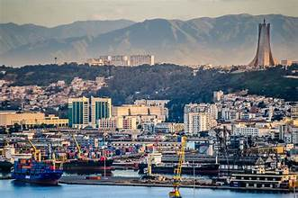
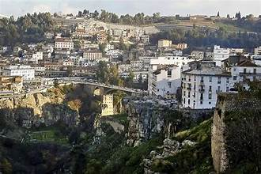
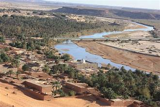

Tamanrasset to Djanet
Explore the Sahara Desert on a road trip from Tamanrasset to Djanet, passing through breathtaking desert landscapes, ancient rock formations, and remote oases like Tassili n'Ajjer National Park.

Explore the Sahara Desert on a road trip from Tamanrasset to Djanet, passing through breathtaking desert landscapes, ancient rock formations, and remote oases like Tassili n'Ajjer National Park.
Travel along the scenic coastal road from Algiers to Oran, enjoying panoramic views of the Mediterranean Sea, stopping at historic cities like Tipaza and Cherchell, and exploring charming seaside towns along the way.
Journey through the Atlas Mountains on a road trip from Tlemcen to Ain Sefra, discovering picturesque valleys, cascading waterfalls, and lush forests, with opportunities to visit historic sites like the Royal Mosque of Tlemcen and the Roman ruins of Timgad.

Drive through the rugged landscapes of eastern Algeria on a road trip from Constantine to Ghardaia, exploring the stunning gorges of the Rhummel River, ancient Roman ruins like Timgad, and the UNESCO-listed M'zab Valley with its unique architecture.
Experience the diverse landscapes of northern Algeria on a road trip from Oran to Bejaia, passing through the scenic Kabylie region, exploring picturesque coastal towns like Collo and Jijel, and enjoying panoramic views of the Mediterranean coastline.

Discover the Kabylie Mountains on a road trip from Algiers to Tizi Ouzou, winding through verdant valleys, pine forests, and traditional Berber villages, with opportunities to hike in the Djurdjura National Park and visit cultural sites like the Museum of Tizi Ouzou.

Traverse the Sahara Desert on a road trip from Ghardaia to Timimoun, admiring the vast sand dunes, ancient ksour (fortified villages), and breathtaking desert landscapes, with opportunities to experience traditional Berber hospitality and camel trekking.

Explore the rugged coastline of western Algeria on a road trip from Tlemcen to Mostaganem, stopping at scenic beaches like Sidi Lakhdar and El Mansourah, and visiting historic sites like the Great Mosque of Tlemcen and the Spanish Fort of Santa Cruz.

Embark on an adventure through the Algerian Sahara on a road trip from Djanet to Illizi, discovering the stunning rock formations of the Tassili n'Ajjer plateau, ancient cave paintings, and hidden oases like the Guelta d'Archei.

Journey through the heart of Algeria on a road trip from Tizi Ouzou to Bechar, crossing the vast desert plains of the Sahara, visiting remote desert towns like Beni Abbès and Taghit, and experiencing the unique culture and hospitality of the desert people.
